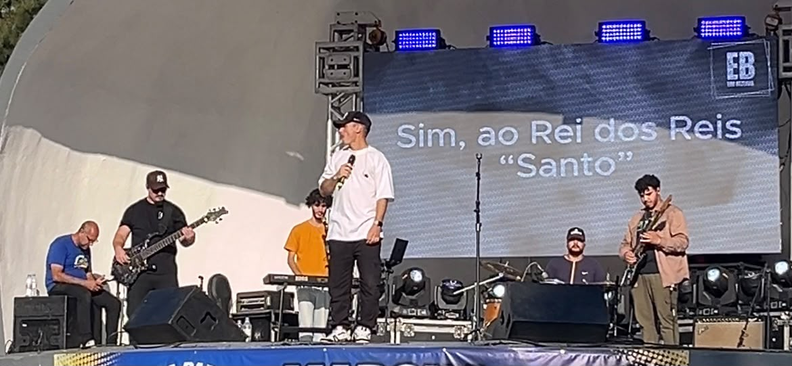
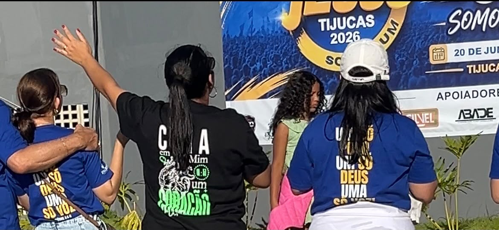
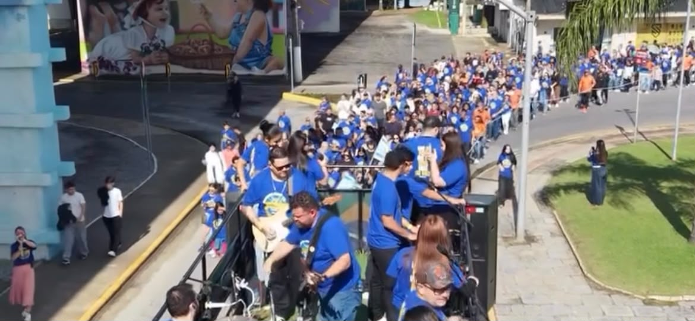

A cidade de Tijucas viveu um dos maiores encontros de fé do ano com a realização da Marcha para Jesus 2026. Com o lema “Um Só Povo, Um Só Deus, Uma Só Voz”, o evento reuniu centenas de fiéis na Praça da Concha Acústica (Praça Sebastião Caboto.) em um dia marcado por louvor, oração e unidade.
A programação começou na Praça da Concha Acústica, ponto de concentração dos participantes. Em clima de expectativa, os fiéis deram início à caminhada que percorreu as principais vias do município.
Acompanhados por um trio elétrico, mensagens de esperança, paz e renovação espiritual tomaram conta das ruas de Tijucas. Durante todo o trajeto, orações e cânticos reforçaram o propósito do evento: declarar fé pela cidade e pelas famílias.
Ao retornarem ao ponto inicial, os participantes deram continuidade à programação com momentos de louvor e intercessão.

Na Concha Acústica, o público viveu momentos de profunda espiritualidade. Orações foram realizadas por restauração de famílias, perdão e bênçãos sobre a cidade de Tijucas.
O ambiente foi marcado por emoção, união e demonstrações públicas de fé, reunindo pessoas de diferentes idades em um mesmo propósito.

O evento contou com a presença de lideranças religiosas e representantes políticos da região, que destacaram a importância espiritual e social da Marcha para Jesus.
Pastor Maicon (Compasti)
“Nós estamos aqui para que juntos possamos elevar o nome d’Ele no lugar mais alto. A nossa vontade hoje é manifestar o Reino de Deus aqui em Tijucas.”
Esaú Bayer (vereador – PL)
“Esse momento… Tijucas está vivendo um grande momento hoje para a Marcha para Jesus.”
Fabiano Goleiro (vereador – MDB)
“Marcha para Jesus. Muito feliz, muito contente. Estamos aqui louvando e agradecendo ao nosso Senhor Jesus Cristo.”

O encerramento da Marcha para Jesus 2026 foi marcado por apresentações musicais e de encerramento cantor Edu Bezerra na Concha Acústica. Crianças, jovens e adultos participaram juntos, muitos carregando bandeiras do Brasil e de Israel.
Em um só coro de louvor, a cidade encerrou o evento em clima de celebração e gratidão.
Mais do que um evento, a Marcha para Jesus 2026 se consolidou como um marco de união e fé em Tijucas. O encontro reforçou o sentimento de comunidade e destacou a força da espiritualidade na vida da população.